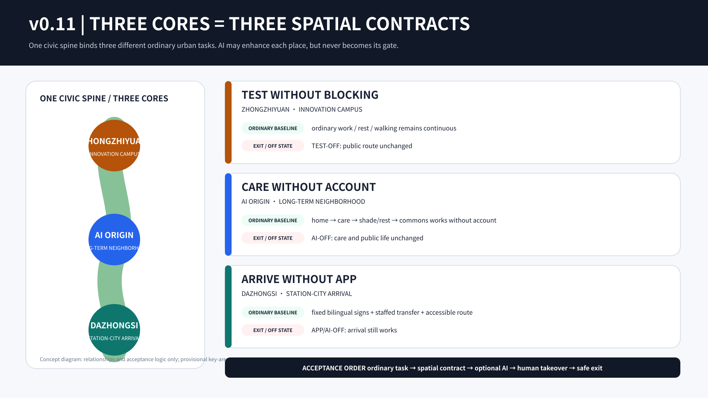
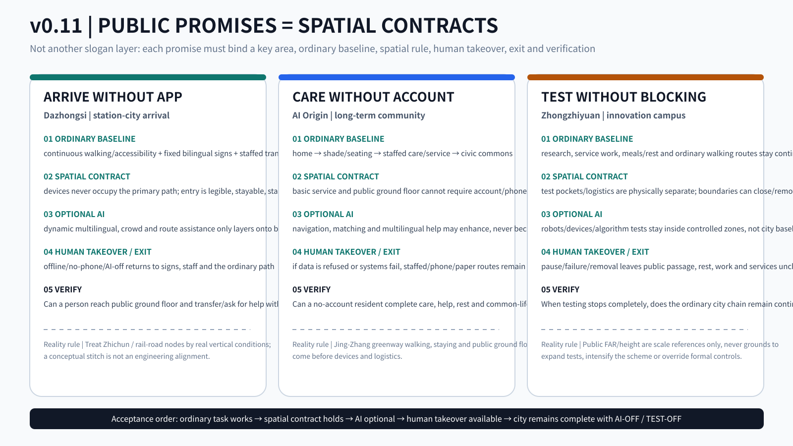
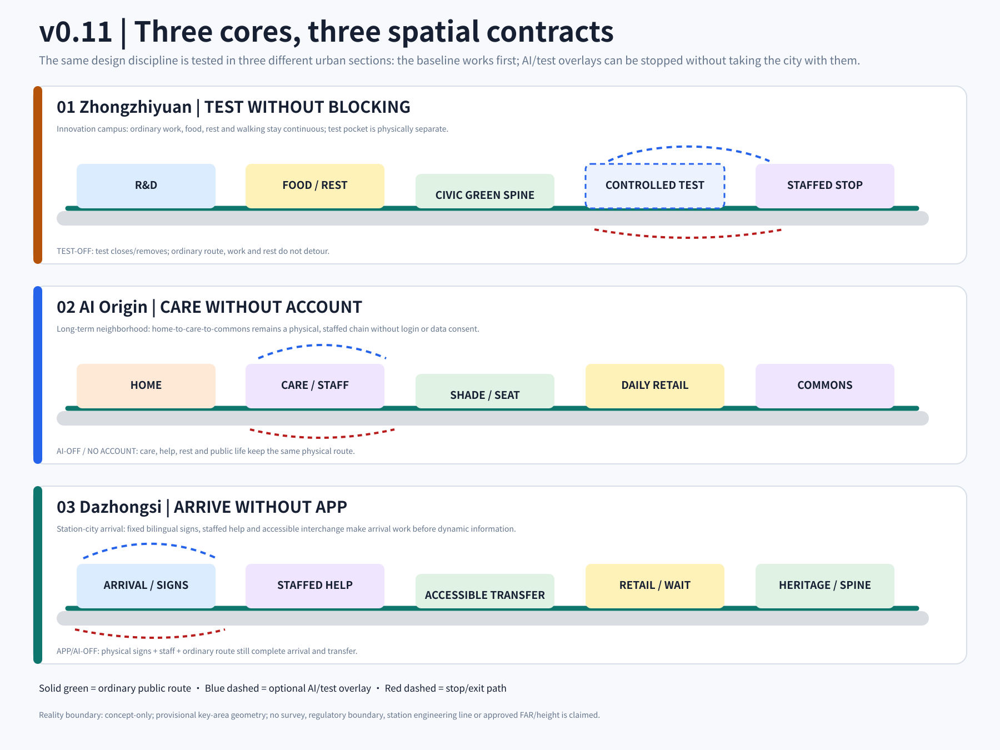
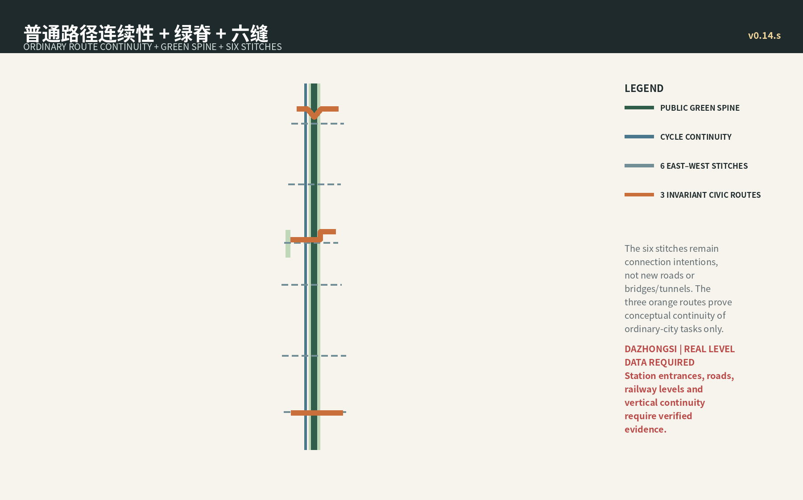
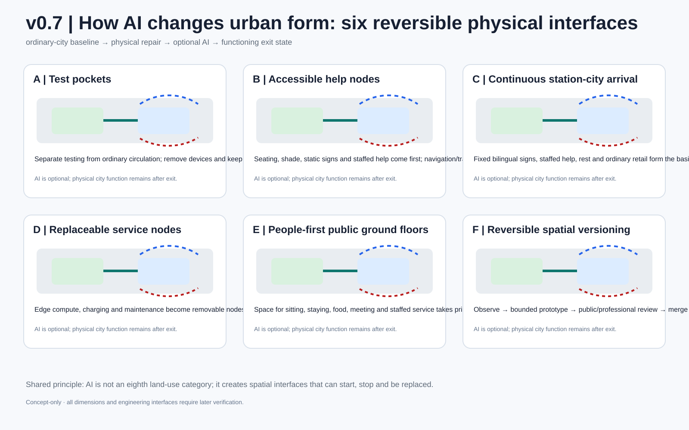

ONE HERO | Three cores = three spatial contracts
Read the scheme as an urban relationship first, not as a review dashboard.

PUBLIC PROMISES | Acceptance questions

CIVIC SECTIONS | The contract is spatial

Acceptance order
ordinary task → spatial contract → optional AI → human takeover → safe exit
C7 ordinary-city baseline
HOME / LEARN / CARE / MOVE / GREEN / WORK / COMMON LIFE remain the seven abilities; AI is not an eighth land-use category.
HOME居
LEARN学
CARE护
MOVE行
GREEN绿
WORK工
COMMON LIFE交
Inherited design evidence




Fixed package metrics
SITE AREA11,412,825.386 m²
GREEN RATIO0.195008
PUBLIC SPACE0.033824
GREEN SPACE2,225,592.728 m²
Reality boundary
- Site and three key-area polygons remain provisional; they are not official redlines or precise-area bases.
- Zhichun Road / rail-road interfaces are treated as real vertical-continuity questions; no bridge/tunnel engineering alignment is invented.
- Public FAR / height values remain contextual scale references only; they do not become this proposal’s controls.
- Official geometry / approved controls, when supplied, trigger package-wide recalculation rather than manual local shifting.